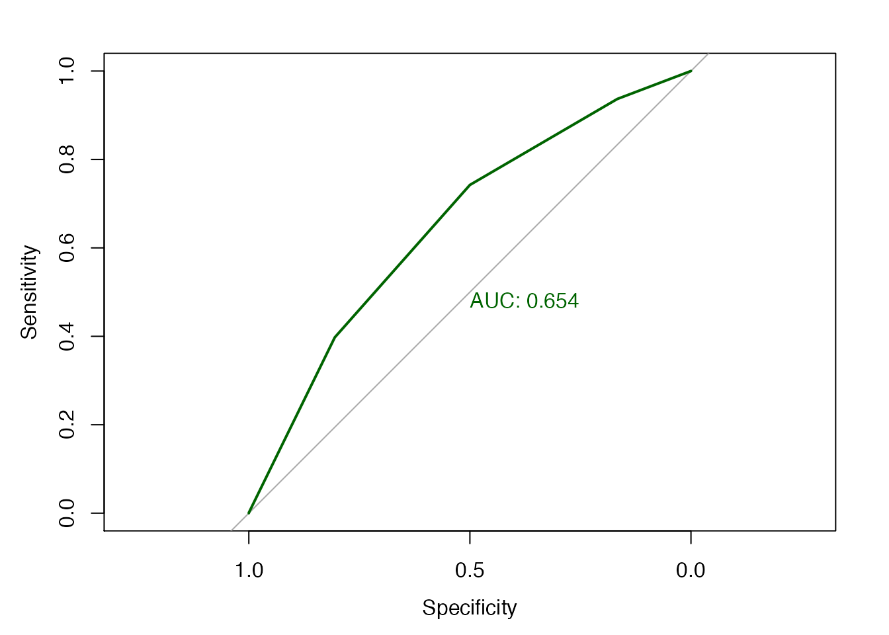
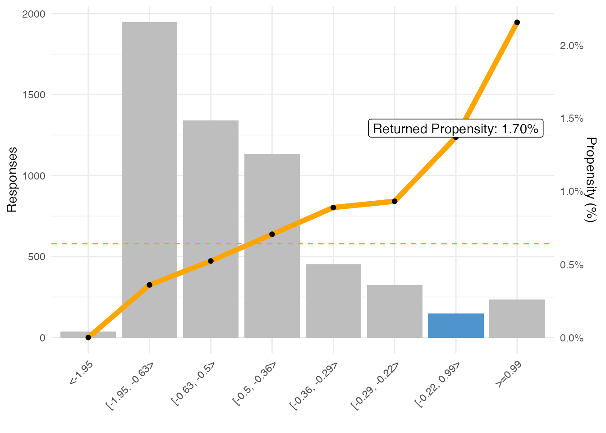

adm-explained.RmdThis notebook shows exactly how all the values in an ADM model report are calculated. It also shows how the propensity is calculated for a particular customer.
We use one of the shipped datamart exports for the example. This is a model very similar to one used in some of the ADM PowerPoint/Excel deep dive examples. To load your own data, see the vignette on ADM reporting for examples.
For the example we use one particular model: AutoNew36Months over SMS. You can use your own data and select a different model.
To explain the ADM model report, we use one of the IH predictors as an example. Swap for any other predictor when using different data.
model <- filterLatestSnapshotOnly(adm_datamart$modeldata) [Name == "AutoNew36Months" & Channel == "SMS"]
modelpredictors <- filterLatestSnapshotOnly(adm_datamart$predictordata) [ModelID == model$ModelID & EntryType != "Inactive"]
predictorbinning <- modelpredictors[PredictorName == "IH.SMS.Outbound.Accepted.pyHistoricalOutcomeCount"][order(BinIndex)]The selected model is shown below. Only the currently active predictors are used for the propensity calculation, so only showing those.
| Action | Sales/AutoLoans |
| Channel | SMS |
| Name | AutoNew36Months |
| Active Predictors | Customer.AnnualIncome, Customer.CreditScore, Customer.Age, Customer.NetWealth, Customer.BusinessSegment, IH.Email.Outbound.Accepted.pxLastGroupID, Customer.WinScore, IH.SMS.Outbound.Accepted.pyHistoricalOutcomeCount, IH.Email.Outbound.Accepted.pyHistoricalOutcomeCount, IH.Email.Outbound.Rejected.pyHistoricalOutcomeCount, Customer.MaritalStatus, Customer.OrganizationLabel, Customer.Gender, IH.Web.Inbound.Accepted.pyHistoricalOutcomeCount, Customer.CLV_VALUE, IH.SMS.Outbound.Accepted.pxLastGroupID, Customer.Prefix, IH.Web.Inbound.Churned.pxLastGroupID, IH.SMS.Outbound.Loyal.pyHistoricalOutcomeCount, IH.Web.Inbound.Rejected.pxLastGroupID, IH.Email.Outbound.Rejected.pxLastGroupID, IH.Web.Inbound.Churned.pxLastOutcomeTime.DaysSince, IH.SMS.Outbound.Rejected.pxLastGroupID, IH.SMS.Outbound.Churned.pxLastGroupID |
| Model Performance (AUC) | 60.5845 |
The ADM model report will show predictor binning similar to this, with all displayed data coming from fields in the ADM data mart. In subsequent sections we’ll show how all the data is derived from the number of positives and negatives in each of the bins.
| Name | IH.SMS.Outbound.Accepted.pyHistoricalOutcomeCount |
| Responses | 5602 |
| # Bins | 5 |
| Predictor Performance (AUC) | 65.4153 |
| Range/Symbols | Responses (%) | Positives | Positives (%) | Negatives | Negatives (%) | Propensity (%) | Z-Ratio | Lift |
|---|---|---|---|---|---|---|---|---|
| MISSING | 0.0008925 | 0 | 0.0000000 | 5 | 0.0008983 | 0.0000000 | -2.237073 | 0.000000 |
| <7.08 | 0.3953945 | 7 | 0.1944444 | 2208 | 0.3966942 | 0.0032000 | -3.051114 | 0.491773 |
| [7.08, 12.04> | 0.3445198 | 11 | 0.3055556 | 1919 | 0.3447718 | 0.0057000 | -0.509054 | 0.886903 |
| [12.04, 18.04> | 0.1952874 | 12 | 0.3333333 | 1082 | 0.1943945 | 0.0110000 | 1.764386 | 1.706886 |
| >=18.04 | 0.0639057 | 6 | 0.1666667 | 352 | 0.0632411 | 0.0168000 | 1.662827 | 2.608007 |
| Grand Total | 1.0000000 | 36 | 1.0000000 | 5566 | 1.0000000 | 0.0064263 | 0.000000 | 1.000000 |
Internally, ADM only keeps track of the total counts of positive and negative responses in each bin. Everything else is derived from those numbers. The percentages and totals are trivially derived, and the propensity is just the number of positives divided by the total. The numbers calculated here match the numbers from the datamart table exactly.
binningDerived <- predictorbinning[, c("Range/Symbols","Positives","Negatives")] # copy over only the labels, pos and neg counts
binningDerived[, `Responses %` := (Positives+Negatives)/(sum(Positives)+sum(Negatives))]
binningDerived[, `Positives %` := Positives/sum(Positives)]
binningDerived[, `Negatives %` := Negatives/sum(Negatives)]
binningDerived[, Propensity := (Positives)/(Positives+Negatives)]| Range/Symbols | Positives | Negatives | Responses % | Positives % | Negatives % | Propensity |
|---|---|---|---|---|---|---|
| MISSING | 0 | 5 | 0.09 | 0.00 | 0.09 | 0.0000 |
| <7.08 | 7 | 2208 | 39.54 | 19.44 | 39.67 | 0.0032 |
| [7.08, 12.04> | 11 | 1919 | 34.45 | 30.56 | 34.48 | 0.0057 |
| [12.04, 18.04> | 12 | 1082 | 19.53 | 33.33 | 19.44 | 0.0110 |
| >=18.04 | 6 | 352 | 6.39 | 16.67 | 6.32 | 0.0168 |
Lift is the ratio of the propensity in a particular bin over the average propensity. So a value of 1 is the average, larger than 1 means higher propensity, smaller means lower propensity:
binningDerived[, Lift := (Positives/(Positives+Negatives)) / (sum(Positives)/sum(Positives+Negatives))]| Range/Symbols | Positives | Negatives | Lift |
|---|---|---|---|
| MISSING | 0 | 5 | 0.0000 |
| <7.08 | 7 | 2208 | 0.4918 |
| [7.08, 12.04> | 11 | 1919 | 0.8869 |
| [12.04, 18.04> | 12 | 1082 | 1.7069 |
| >=18.04 | 6 | 352 | 2.6080 |
The Z-Ratio is also a measure of the how the propensity in a bin differs from the average, but takes into account the size of the bin and thus is statistically more relevant. It represents the number of standard deviations from the average, so centers around 0. The wider the spread, the better the predictor is.
\[\frac{posFraction-negFraction}{\sqrt(\frac{posFraction*(1-posFraction)}{\sum positives}+\frac{negFraction*(1-negFraction)}{\sum negatives})}\]
See also: http://techdocs.rpega.com/display/EPZ/2019/06/21/Z-ratio+calculation+in+ADM.
binningDerived[, posFraction := Positives/sum(Positives)]
binningDerived[, negFraction := Negatives/sum(Negatives)]
binningDerived[, `Z-Ratio` := (posFraction-negFraction)/sqrt(posFraction*(1-posFraction)/sum(Positives) + negFraction*(1-negFraction)/sum(Negatives))]| Range/Symbols | Positives | Negatives | posFraction | negFraction | Z-Ratio |
|---|---|---|---|---|---|
| MISSING | 0 | 5 | 0.0000000 | 0.0008983 | -2.2370730 |
| <7.08 | 7 | 2208 | 0.1944444 | 0.3966942 | -3.0511136 |
| [7.08, 12.04> | 11 | 1919 | 0.3055556 | 0.3447718 | -0.5090537 |
| [12.04, 18.04> | 12 | 1082 | 0.3333333 | 0.1943945 | 1.7643857 |
| >=18.04 | 6 | 352 | 0.1666667 | 0.0632411 | 1.6628273 |
The predictor AUC is the univariate performance of this predictor against the outcome. This too can be derived from the positives and negatives, e.g. using the pROC package.
library(pROC)
response = unlist(sapply(1:nrow(predictorbinning),
function(r){return(c(rep(T, predictorbinning$Positives[r]),
rep(F, predictorbinning$Negatives[r])))}))
prediction = unlist(sapply(1:nrow(predictorbinning),
function(r){return(rep(predictorbinning$`Propensity (%)`[r],
predictorbinning$Positives[r] +
predictorbinning$Negatives[r]))}))
plot.roc(response, prediction, print.auc=T, col="darkgreen", levels=c(T,F), direction=">")
There is also a convenient function in pdstools to calculate it directly from the positives and negatives:
pdstools::auc_from_bincounts(predictorbinning$Positives, predictorbinning$Negatives)
#> [1] 0.6541527The score is calculated from the log odds which are simply the ratio of the probabilities of positives and negatives. For the actual calculation in ADM this is modified slightly to avoid division-by-zero problems and is written differently to avoid numeric instability as shown below.
binningDerived[, posFraction := Positives/sum(Positives)]
binningDerived[, negFraction := Negatives/sum(Negatives)]
binningDerived[, `Log odds` := log(posFraction/negFraction)]
binningDerived[, `Modified Log odds` :=
(log(Positives+1/.N) - log(sum(Positives+1))) -
(log(Negatives+1/.N) - log(sum(Negatives+1)))]| Range/Symbols | Positives | Negatives | posFraction | negFraction | Log odds | Modified Log odds |
|---|---|---|---|---|---|---|
| MISSING | 0 | 5 | 0.0000000 | 0.0008983 | -Inf | 1.6536612 |
| <7.08 | 7 | 2208 | 0.1944444 | 0.3966942 | -0.7130193 | -0.8140942 |
| [7.08, 12.04> | 11 | 1919 | 0.3055556 | 0.3447718 | -0.1207512 | -0.2319921 |
| [12.04, 18.04> | 12 | 1082 | 0.3333333 | 0.1943945 | 0.5392532 | 0.4264424 |
| >=18.04 | 6 | 352 | 0.1666667 | 0.0632411 | 0.9690413 | 0.8721079 |
To get to a propensity, the log odds of the relevant bins of the active predictors are added up and divided by the number of active predictors +1, then used to index in the classifier.
Below an example. From all the active predictors of the model for we pick a value (in the middle for numerics, first symbol for symbolics) and show the (modified) log odds. These log odds values are averaged (added up and divided by number of active predictors + 1), and this is the “score” that is mapped to a propensity value by the classifier (which is constructed using the PAV(A) algorithm).
| Name | Value | Bin | Positives | Negatives | Log odds |
|---|---|---|---|---|---|
| Customer.AnnualIncome | 2827 | 1 | 7 | 3401 | -1.1780835 |
| Customer.CreditScore | 432 | 1 | 14 | 426 | 1.5687755 |
| Customer.Age | 37 | 2 | 7 | 3042 | -1.1030803 |
| Customer.NetWealth | 5458 | 1 | 7 | 2679 | -0.9394840 |
| Customer.BusinessSegment | middleSegmentPlus | 1 | 10 | 3369 | -0.8256861 |
| IH.Email.Outbound.Accepted.pxLastGroupID | CreditCards | 2 | 10 | 2887 | -0.7338969 |
| Customer.WinScore | 66 | 2 | 9 | 462 | 1.0247886 |
| IH.SMS.Outbound.Accepted.pyHistoricalOutcomeCount | 1 | 2 | 7 | 2208 | -0.8140942 |
| IH.Email.Outbound.Accepted.pyHistoricalOutcomeCount | 1 | 2 | 10 | 1244 | 0.1372604 |
| IH.Email.Outbound.Rejected.pyHistoricalOutcomeCount | 68 | 2 | 6 | 1251 | -0.3955513 |
| Customer.MaritalStatus | Single | 1 | 6 | 1454 | -0.4750671 |
| Customer.OrganizationLabel | NON-MISSING | 1 | 31 | 3646 | 0.2356695 |
| Customer.Gender | M | 1 | 7 | 1735 | -0.5051155 |
| IH.Web.Inbound.Accepted.pyHistoricalOutcomeCount | NA | 1 | 0 | 4 | 2.3964598 |
| Customer.CLV_VALUE | 352 | 1 | 7 | 1379 | -0.2755163 |
| IH.SMS.Outbound.Accepted.pxLastGroupID | Customer | 2 | 9 | 2090 | -0.5140538 |
| Customer.Prefix | Miss | 2 | 8 | 1174 | -0.0219008 |
| IH.Web.Inbound.Churned.pxLastGroupID | MISSING | 1 | 23 | 2891 | 0.1412802 |
| IH.SMS.Outbound.Loyal.pyHistoricalOutcomeCount | NA | 1 | 24 | 4563 | -0.2161764 |
| IH.Web.Inbound.Rejected.pxLastGroupID | Account | 1 | 18 | 3425 | -0.2688240 |
| IH.Email.Outbound.Rejected.pxLastGroupID | DepositAccounts | 2 | 7 | 975 | 0.0345785 |
| IH.Web.Inbound.Churned.pxLastOutcomeTime.DaysSince | NA | 1 | 23 | 2891 | 0.1741358 |
| IH.SMS.Outbound.Rejected.pxLastGroupID | Account | 2 | 10 | 1484 | -0.0391163 |
| IH.SMS.Outbound.Churned.pxLastGroupID | MISSING | 1 | 28 | 4935 | -0.1440303 |
| Average Log odds | NA | NA | NA | -0.1094691 |
The success rate is defined as \(\frac{positives}{positives+negatives}\) per bin.
The adjusted propensity that is returned is a small modification (Laplace smoothing) to this and calculated as \(\frac{0.5+positives}{1+positives+negatives}\) so empty models return a propensity of 0.5.
| Index | Bin | Positives | Negatives | Cum. Total (%) | Propensity (%) | Adjusted Propensity (%) | Cum. Positives (%) | Z-Ratio | Lift (%) |
|---|---|---|---|---|---|---|---|---|---|
| 1 | <-1.95 | 0 | 35 | 100.000000 | 0.0000000 | 1.3888889 | 100.00000 | -5.934769 | 0.0000 |
| 2 | [-1.95, -0.63> | 7 | 1939 | 99.375223 | 0.3597122 | 0.3852080 | 100.00000 | -2.322612 | 55.9752 |
| 3 | [-0.63, -0.5> | 7 | 1331 | 64.637629 | 0.5231689 | 0.5601195 | 80.55556 | -0.674919 | 81.4109 |
| 4 | [-0.5, -0.36> | 8 | 1125 | 40.753302 | 0.7060900 | 0.7495591 | 61.11111 | 0.289246 | 109.8755 |
| 5 | [-0.36, -0.29> | 4 | 446 | 20.528383 | 0.8888889 | 0.9977827 | 38.88889 | 0.590078 | 138.3210 |
| 6 | [-0.29, -0.22> | 3 | 319 | 12.495537 | 0.9316770 | 1.0835913 | 27.77778 | 0.563599 | 144.9793 |
| 7 | [-0.22, 0.99> | 2 | 144 | 6.747590 | 1.3698630 | 1.7006803 | 19.44444 | 0.776338 | 213.1659 |
| 8 | >=0.99 | 5 | 227 | 4.141378 | 2.1551724 | 2.3605150 | 13.88889 | 1.700289 | 335.3688 |
Below the classifier mapping. On the x-axis the binned scores (log odds values), on the y-axis the Propensity. Note the returned propensities are following a slightly adjusted formula, see the table above. The bin that contains the calculated score is highlighted.
The score -0.1094691 falls in bin 7 of the classifier, so for this set of inputs, the model returns a propensity of 1.70%.
